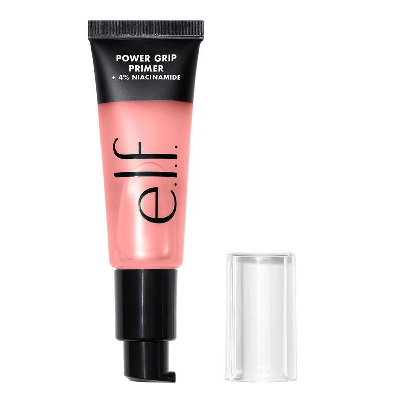
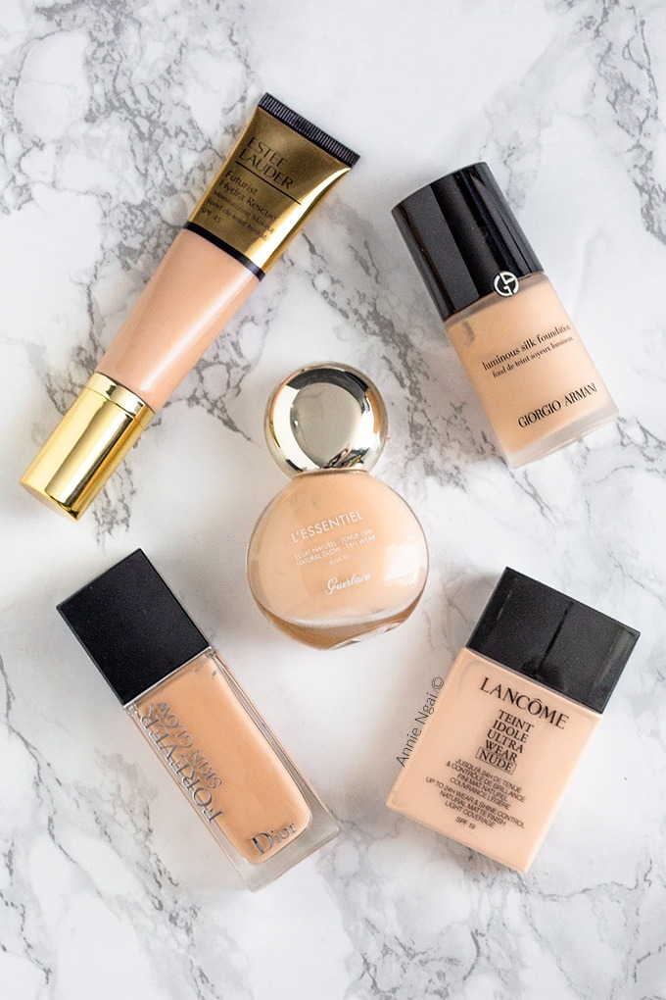
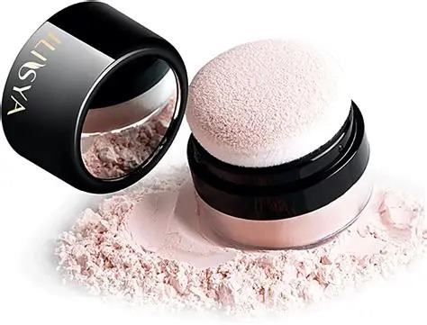
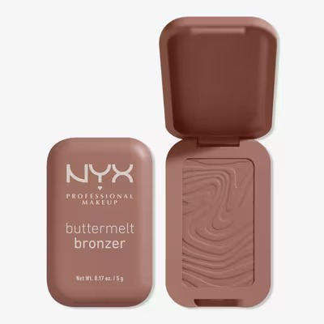
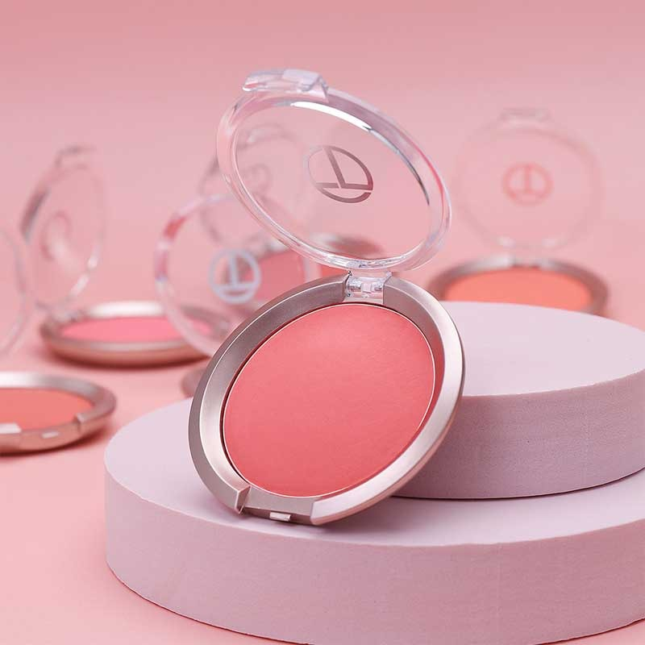
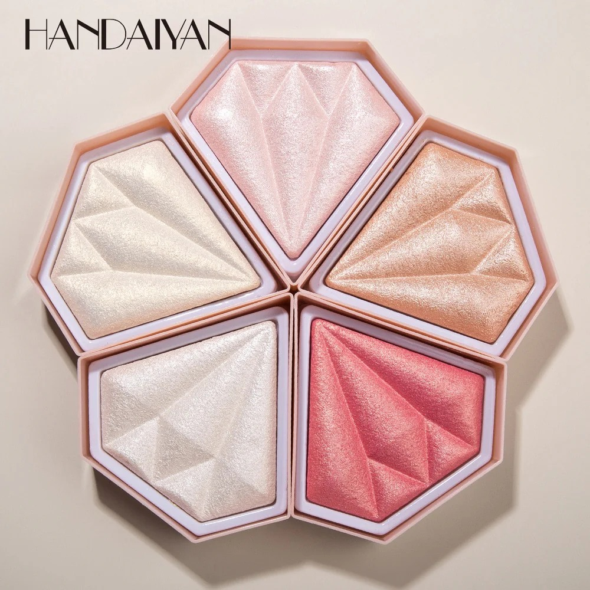
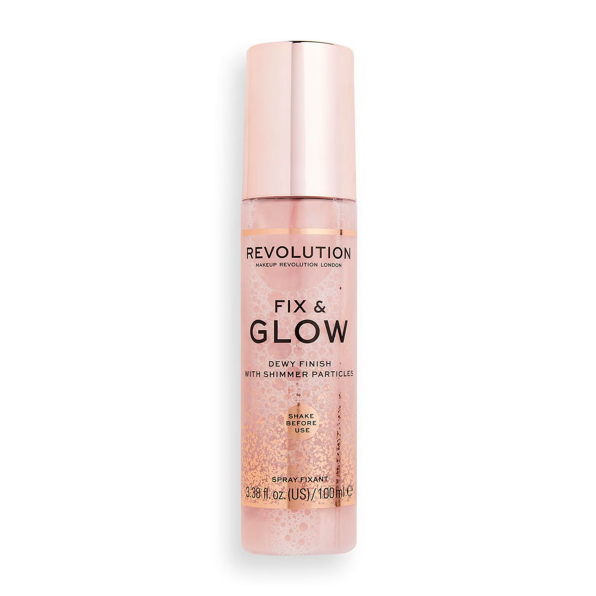

Primer: Helps makeup stay longer and creates a smooth base for the skin.

Foundation: Evens out the skin tone and covers imperfections.

Powder: Sets makeup and reduces shine on the face.

Bronzer: Gives warmth and definition to the face.

Blush: Adds a healthy and fresh color to the cheeks.

Highlighter: Adds glow and brightness to certain areas of the face.

Setting Spray: Keeps makeup fixed for a longer time.
